LIMITLAB




¿QUÉ PERSONAJE SOS
HOY?
Descubrí qué arquetipo representa
tu momento actual
El resultado representa un momento,
no una etiqueta fija
{{ step + 1 }} / {{ questions.length }}
{{ questions[step].question }}
TU PERSONAJE ES
{{ mainCharacter.label }}
{{ mainCharacter.description }}
También conectás con:
{{ sc.label }}